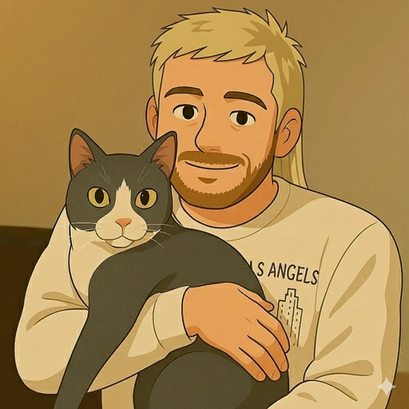

Onboarding emails that actually got opened
I built a Relevance AI pipeline that writes individually personalised onboarding emails from customer data. 27.1% open rate vs 17.0% for the control. Here's how it works.
AI

I'm a PM and Product Ops lead at Sked Social. I don't write code, I build systems. AI agents, automation stacks, and tooling that let a small team operate at a scale.
Six years at Sked Social, four in Customer Success and two in product. That CS background isn't a footnote, it's why the product work lands. I live at the intersection of what customers need and what the product does, and I spend most of my time closing the gap between the two.
My build layer is AI. Agents, automations, and workflows that let a small team operate at a scale it otherwise couldn't, without hiring for every problem or accepting that the boring stuff just has to exist. I don't write code. I build systems.
On the side I do solo HubSpot RevOps consulting for teams who've ended up in a mess: deal automation, lead flows, pipelines, reporting. Usually someone built something without a plan. I fix it.